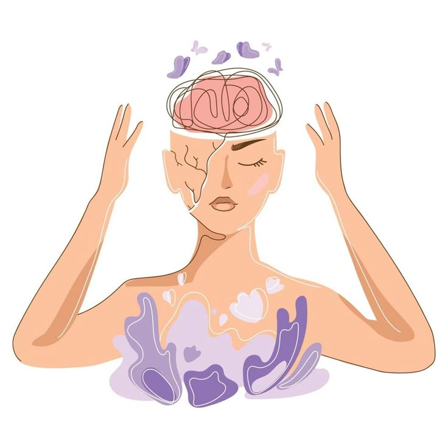
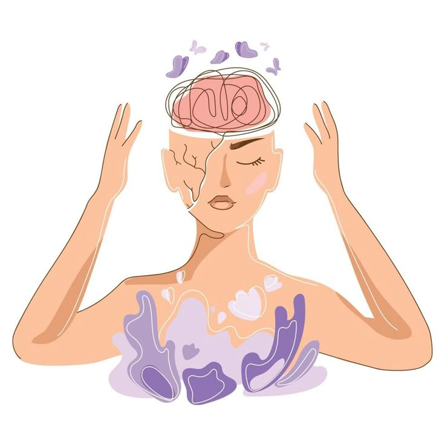
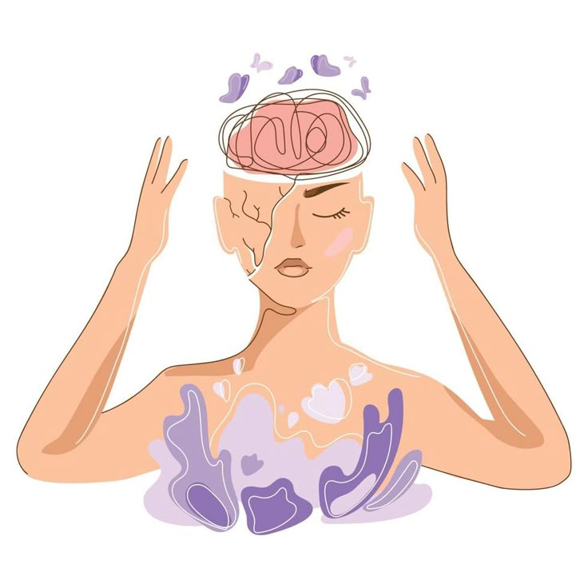

Comprendiendo la mente, el cuerpo y las emociones

Ofrecemos terapia individual, de pareja, familiar, grupal, evaluaciones psicológicas, orientación y apoyo emocional.
En esta sección encontrarás información clara sobre el cuidado de tu salud mental.
✅ Solución: Terapia individual, mindfulness, respiración consciente.
✅ Solución: Facilitar acceso a terapias, contacto rápido con psicólogos.
✅ Solución: Autocompasión, metas realistas, journaling.
✅ Solución: Psicoterapia empática, contención y escucha activa.
✅ Solución: CBT, meditación guiada, autoconocimiento y educación emocional.
Factores como problemas médicos, traumas, pensamientos negativos, estrés crónico o genética pueden influir en su aparición.
Los síntomas incluyen nerviosismo, respiración acelerada, fatiga, dificultad para concentrarse y problemas para dormir.
Fomentamos el autoconocimiento, la compasión y la aceptación de uno mismo a través de técnicas terapéuticas efectivas.

Descubre cómo cuidar tu salud mental con información clara, confiable y humana.

Nuestros psicólogos te escuchan, validan tus emociones y te guían para que te sientas mejor contigo mismo/a.